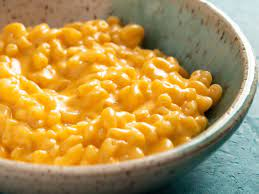

Easy Cheesy Macaroni

Description
An easy dinner for a busy weekday.
This was a family tradtion on school nights. Goes great with a salad and homemade bread!
Ingredients
- 1 pound seashell pasta
- 1 (15 ounce) can tomato sauce
- 1 (8 ounce) package processed cheese food, shredded
Steps
- Cook macaroni according to package directions, shortening recommended cooking time by 2 to 3 minutes as macaroni will
continue to bake later in oven. Drain.
- Mix cooked macaroni and tomato sauce in large glass ovenproof dish. Stir in 3/4 of the shredded cheese. Sprinkle
remaining 1/4 of the cheese on top.
- Bake at 350 degrees F (175 degrees C) for 20 minutes.